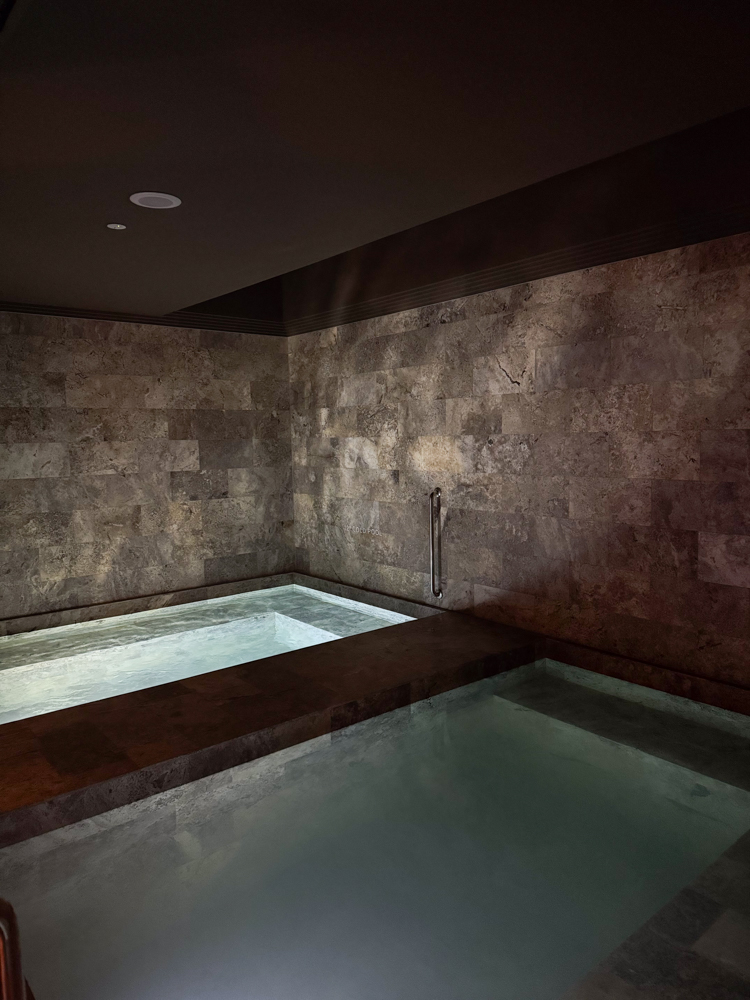
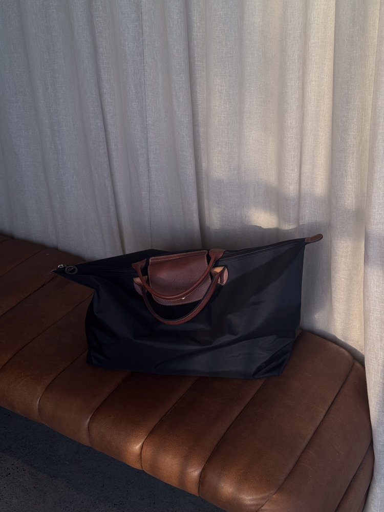

Why You Should Book A Sauna And Cold Plunge Visit at The Bathhouse Albion
The Bathhouse Albion is only a short drive from one of my favourite hotels in Australia, The Calile Hotel — positioned near James Street in Brisbane, close to fine dining, designer shopping and this incredibly considered wellness space. It has quickly become the kind of place I plan my Brisbane trips around.
Ice Bath Benefits (Cold Water Therapy)
Cold water therapy has a long list of benefits that go well beyond the initial shock. Regular cold plunging supports muscle recovery, accelerates post-workout soreness reduction, boosts circulation and strengthens mental resilience over time. There's also evidence that consistent cold exposure can enhance immunity and increase alertness — the kind of results that make you understand why it's had such a moment.
Warm Bath Benefits (Hot Water Therapy)
Heat therapy on the other hand works to deeply relax muscles, reduce stress hormones and improve sleep quality. For anyone dealing with joint discomfort, the warmth helps to ease inflammation and improve mobility. It's a full-body reset — and pairing it with cold plunging creates one of the most effective contrast therapy experiences available without a personal spa.
Which One Should You Choose?
Honestly? Do both. The contrast between hot and cold — alternating between sauna or warm bath and the cold plunge — is where the real benefits compound. Start with heat, move to cold, and repeat. Your nervous system will thank you.
The Bathhouse Albion, Brisbane
The space itself is beautifully designed — calm, minimal and genuinely luxurious without being over the top. The kind of wellness experience that feels like a treat but leaves you feeling like you've done something genuinely good for your body.

